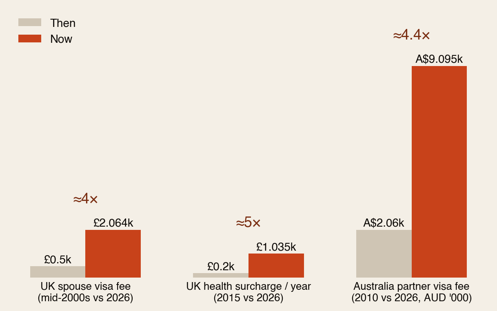
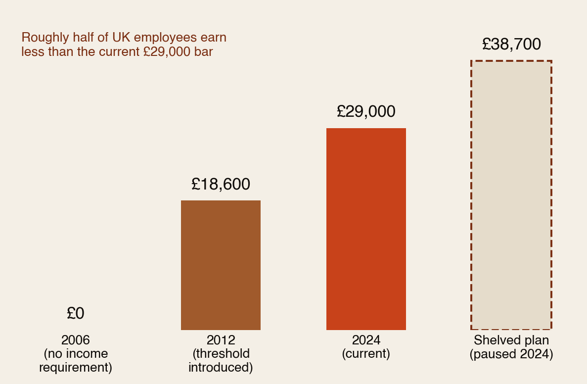
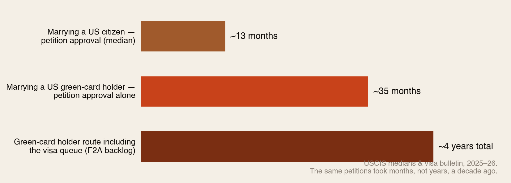
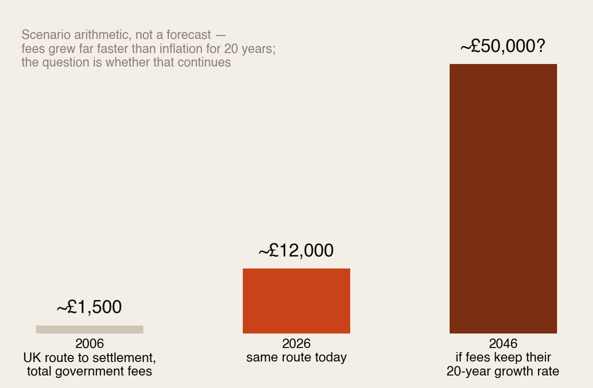

Marrying across borders.
Twenty years ago, bringing your spouse to the UK required no minimum income and a fee of a few hundred pounds. Today the bar is £29,000 — more than half of British workers earn — the fees have quadrupled, and a US green-card holder waits about four years to live with their wife or husband. This is the 20-year story of how being together got a price tag — and where the next 20 years are heading.
Section 01The Short Version
For diaspora couples, the wedding is the easy part. The hard part is the paperwork that decides whether you get to live in the same country. Five numbers:
- £0 → £29,000 — the UK’s minimum income to sponsor a spouse: none before 2012, £29,000 today. Roughly half of UK employees earn less than that.
- ~5× — how much the UK’s per-year health surcharge grew in nine years (£200 → £1,035). The visa fee itself roughly quadrupled over two decades.
- ~4 years — what a US green-card holder now waits to be joined by a spouse (petition + visa queue). Marrying a citizen: still ~13 months.
- A$9,095 — Australia’s partner visa fee, the world’s most expensive — several times its 2010 level.
- £12,000+ — the UK’s total government fees for one spouse’s five-year route to settlement, before a single lawyer’s letter.
None of these numbers measures love, risk or fraud. They measure politics — and for twenty years, in every major destination at once, the politics has moved in one direction.
Section 02The Last 20 Years: How Being Together Got a Price Tag

Rewind to 2006 and the family route looked almost unrecognisable: no income threshold in the UK, fees in the hundreds, no health surcharge (it didn’t exist until 2015), and US spousal petitions measured in months. A young couple’s main obstacle was the airfare.
Then three things happened, in sequence, everywhere: fees became a revenue source (the UK now openly prices visas far above processing cost), income thresholds became a migration-control tool (the UK’s 2012 reform was explicitly designed to cut net migration), and processing backlogs became a quiet queue that no politician has to defend because nobody voted for it. The couple pays for all three.
Section 03The Income Wall

Sit with what Fig 2 means: the UK created a minimum salary for family life, and then set it at a level roughly half its own workers don’t earn. A British-Nigerian nurse or a British-Ghanaian care worker — doing essential jobs the UK recruited them for — can earn too little to legally live in Britain with their own husband or wife.
The rules bite hardest exactly where the diaspora lives: young couples early in careers, key workers in sectors with modest pay, and anyone whose income comes in the “wrong” form (self-employment and foreign income are harder to count than a UK payslip). And note who is unaffected: the wealthy clear the bar without noticing, or use the cash-savings route (£88,500 in the bank waives the income test entirely). The wall is means-tested in reverse.
Section 04The Wait: Married, but in Different Countries

The American version of the wall isn’t money — it’s time. A Kenyan software engineer with a green card who marries back home starts a clock that now runs about four years before his wife can move to Houston: ~35 months for the petition alone, then a visa queue currently working through applications from 2022.
Four years is not a delay. It’s a chapter of a marriage — often the first one — conducted by video call, annual visits and remittances. Children are born into it. And unlike a fee, you cannot borrow, save or fundraise your way past a queue.
Section 05Where to Marry From, Today
The same marriage, four different systems (2026 rules):
- United Kingdom: the money wall — £29,000 income (or £88,500 savings), ~£4,650 upfront in fee + surcharge, £12,000+ over the five-year route. Processing itself is relatively quick once you qualify.
- United States: the time wall — cheap by comparison (~$3,000–4,000 all-in in government fees) and no income threshold beyond modest support rules, but ~13 months married to a citizen and ~4 years married to a green-card holder.
- Canada: the reasonable one — no minimum income to sponsor a spouse, moderate fees (~C$1,200–1,700), roughly a year’s processing, and a 3-year support undertaking instead of an income test. This is what the humane version looks like — and it exists.
- Australia: the fee wall — A$9,095 for the application alone, the world’s priciest, with waits that historically ran 1–2 years.
Same couple, same love, same paperwork honesty — and the price of being together ranges from about C$1,500 to over £12,000, and from twelve months to four years, purely by which passport the sponsoring partner carries.
Section 06The Next 20 Years

Nobody can forecast visa policy — but the last two decades give the trend, and three forces suggest it continues:
- Family migration is the politically cheapest target. Work visas have business lobbies; student visas fund universities. Spouses have no lobby — which is why every tightening cycle reaches family routes first and loosens them last.
- Fees only ratchet one way. No major destination has meaningfully cut family-visa fees in twenty years. Thresholds get reviewed; fees get “updated.” If the 2006–2026 growth rate simply continues, the UK route’s fees pass £50,000 by 2046 — a scenario, but one built on an unbroken 20-year pattern.
- The counter-force is demographics. Every major destination is ageing. The same countries raising family-visa walls will spend the next 20 years competing for working-age migrants — and family rights are part of what talent shops for. Canada’s no-income-test model is a preview of the competitive position, not just a kindness.
The realistic 2046: more expensive and more automated (digital status, faster decisions), with the money wall higher in the UK/Australia mould — unless the talent war forces the Canadian model to win. Which way it goes is exactly the kind of thing diaspora communities can influence, because family rules move when affected citizens — voters — make them politically expensive.
Section 07What It Does to Families
- The Skype family became an institution. After the UK’s 2012 threshold, the Children’s Commissioner estimated ~15,000 British children were growing up separated from a parent by the income rule — a figure from 2015, before the bar rose another £10,400.
- The wedding budget grew a second line. Fold this into our wedding research: a diaspora marriage now carries ceremony costs plus a five-figure visa bill — and unlike the party, the visa bill can’t be trimmed.
- Careers get bent around thresholds. People take second jobs, delay children, or move cities purely to clear a sponsorship number — the income wall quietly redesigns lives that were never counted in any impact assessment.
- Some couples emigrate to be together. The “Surinder Singh” era — Britons moving to Ireland or the EU to use European rules to reunite — previewed a pattern: when family routes close, couples don’t separate. They relocate, and the sponsoring country loses its own citizen.
Section 08The Playbook
- Check the rules before the ring. Not romantic; cheaper than four years apart. The sponsoring partner’s passport, income and savings determine everything — know the numbers before you plan the wedding date.
- Build the sponsorship file early. Six months of payslips above the threshold, in the right format, from the right kind of employment — the wall is cleared on paperwork quality as much as income.
- Know the savings route. In the UK, £88,500 in savings (held 6 months) replaces the income test — family and harambee logic can legally solve what a salary can’t.
- If you hold a green card, weigh citizenship timing. Naturalising before marrying converts a ~4-year wait into ~13 months. Few decisions in life buy back three years.
- Budget the visa like a second wedding. UK route: £12,000+; add it to the celebration budget from day one, and cut the party before you cut the paperwork.
- Count the Canadian option honestly. If both careers travel, the no-income-test route may beat years of threshold-chasing where you are.
- And politically: family rules move when citizens who vote are the ones separated. That’s the diaspora — increasingly naturalised, increasingly counted. Silence is the only guarantee the wall keeps rising.
The marriage certificate is one page. In 2026, the right to live under one roof is a second, more expensive document — plan for both.
Section 09How We Checked
- Verified: UK minimum income requirement history — introduced July 2012 at £18,600, raised to £29,000 April 2024, £38,700 stage paused, ~half of UK employees below £29,000, 2025 independent review (House of Commons Library); UK spouse visa fee £2,064 overseas and IHS £200 (2015) → £1,035 (2024) (Commons Library / Home Office); US I-130 medians ~13 months (spouse of citizen) and ~35 months (spouse of LPR) with F2A queue at ~2022 dates (USCIS / visa bulletin, 2025–26); Australia partner visa A$9,095 (Home Affairs).
- Reported / estimates: mid-2000s UK fee level (~£500) and Australia’s 2010 fee (~A$2,060) from fee-history compilations — direction certain, decimals indicative; the ~£12,000 five-year route total (our sum of published fees); the ~15,000 “Skype families” children (Children’s Commissioner, 2015); Canada/US fee ranges (official schedules, rounded).
- Labelled scenario: the 2046 fee projection extends the 2006–2026 growth rate forward — arithmetic on a trend, not a forecast; the “next 20 years” section is analysis of stated policy directions, not prediction.
Sources: House of Commons Library (partner-visa financial requirement; immigration fees; health surcharge briefings); GOV.UK; USCIS processing data and State Department visa bulletin (via immigration-law trackers); Australian Department of Home Affairs; IRCC; Children’s Commissioner for England (2015). Companion reports: The Price of “I Do”, The Other Side of the Bet. Full detail in the PDF edition.
The diaspora helps the diaspora.
Africa Global Forum is a peer network for Africans abroad — help each other, sit together, and bounce ideas. The research above is part of an open library. The Forum itself is by application.